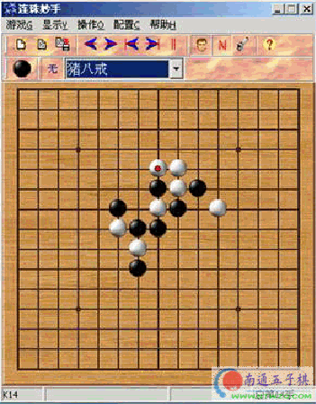

最近总在popo上下五子棋，发现好多朋友喜欢五子棋，但我们国内还不是很普及，大家可能有时候可能只是玩玩，其实连珠是一门很有意思的竞技游戏，但也相当深奥不是那么简单和容易。有时在别人下棋时经常发现由于落子顺序不当造成赢棋走输，胜势走丢的情形。

如果落子不当最后会被白棋反四而落败。正确走法如下：
现在下方冲三，然后再上方冲三，最后形成四三胜，其实冲棋的思路好多朋友都能想到，但是如果先冲上方对方会反，其他冲棋的途径都不能获胜！
所以我觉得落子顺序的第一个规律就是：先冲白棋不带反的，最后再冲白棋带反的，这样等到白棋反三时黑棋就已经冲四活三了。还有就是如果有四和三的时候，先冲三后冲四，这是一个道理，但遇到具体问题还要具体分析。
请大家看下图：黑先行，如何取胜。
上图所示，用普通思路很难取胜。在认真考虑后请看下图：
黑棋落子后一方面在右方冲四活三，一方面左上方活三后冲四活三。黑棋胜定！这就是我们常说的一子双杀的演变棋形。这样就无形中使白棋少落一子顾此失彼，最终败北。
落子顺序的第二个规律，尽量走一子双杀的棋形。
像这样的例子还有很多，但还要具体问题具体分析，在下抛砖引玉，请大家多多指教！
普通会员『郭张飞』于2006-5-28 12:54:56发表评论： 这招固好，但用错时间了！
普通会员『gcxyeer』于2006-5-27 16:09:17发表评论： 呵呵楼主第二题不是正解,这样下白要赢的.不过黑还是可以胜的就是下在最上面黑棋左边一格白无法解了
游客『hw666hw』于2006-5-27 15:37:50发表评论： 我没看出你后面举的那个例子如何黑必胜
你那走法成全白走双三,而你黑根本无法冲四...
搂主你开国际玩笑吧
第二张图,楼主肯定贴错了,上方先伏有四三做杀,黑棋放在最上面一行的黑棋左边,然后再打楼主第二张图里的点跳三,然后下一手冲四活三胜了.
这里就是做杀,白棋只能防一手,如果是冲四后再活三,白棋防两手就会反先手,从而胜负易手.